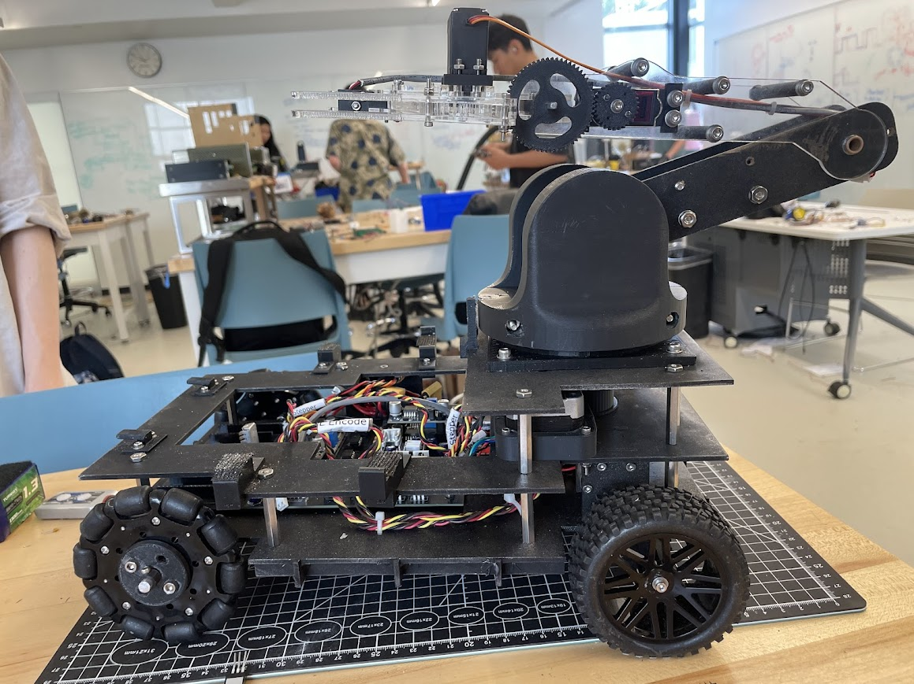
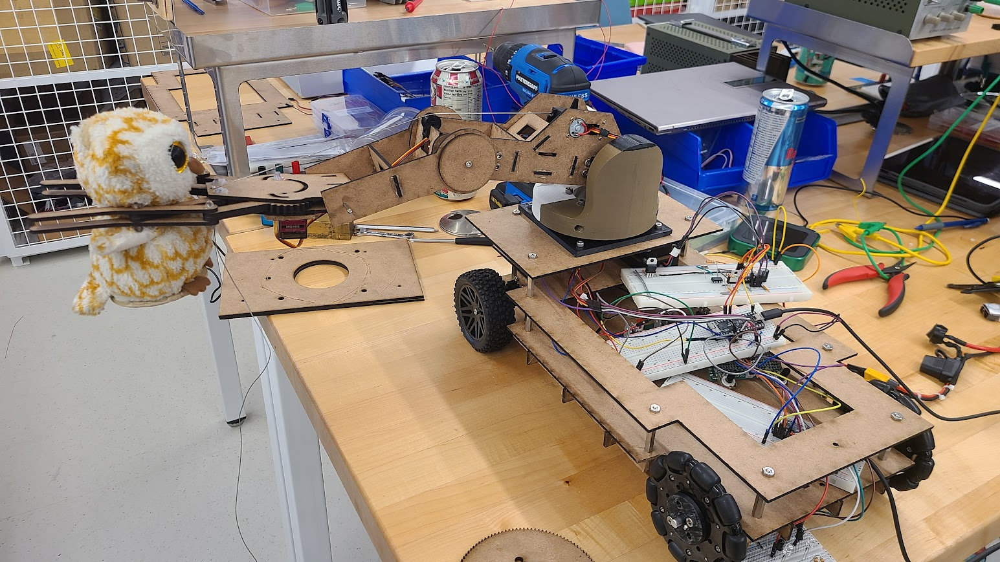
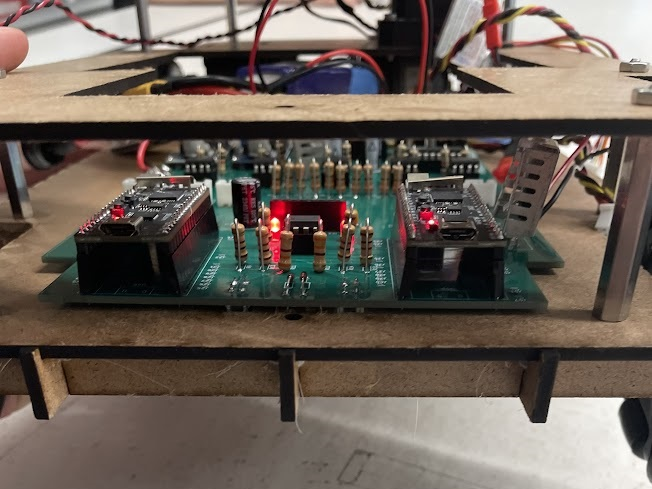
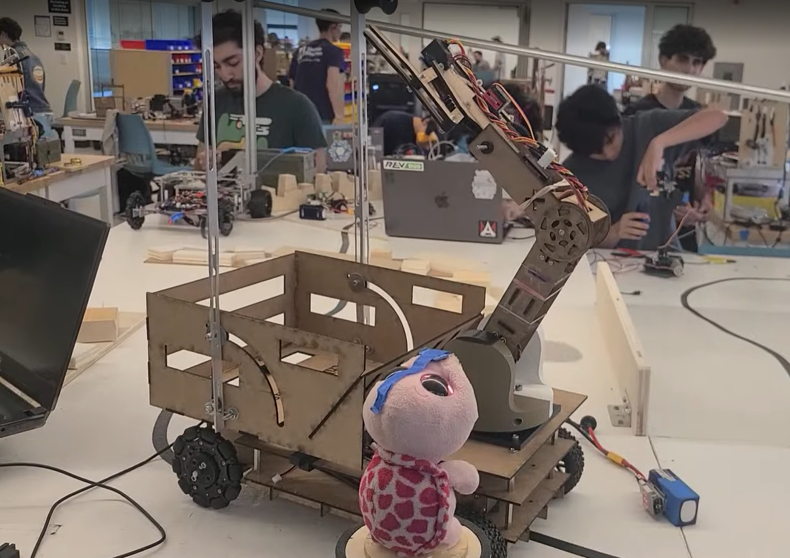
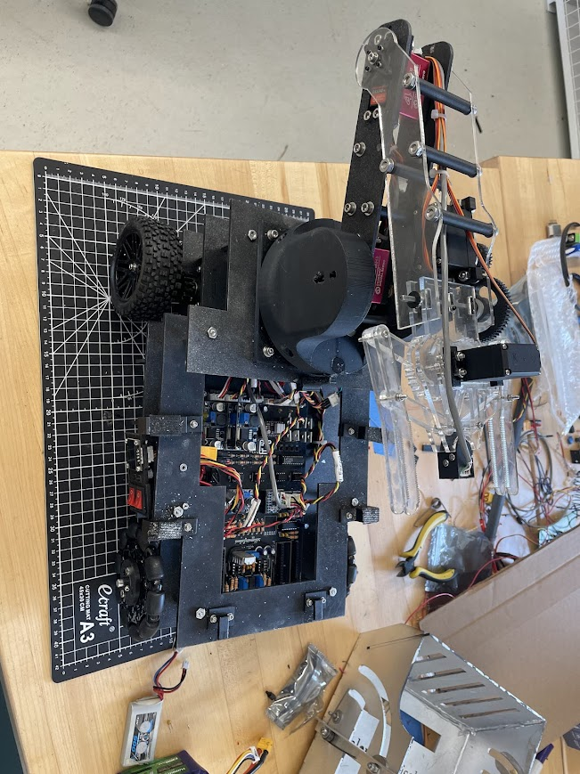
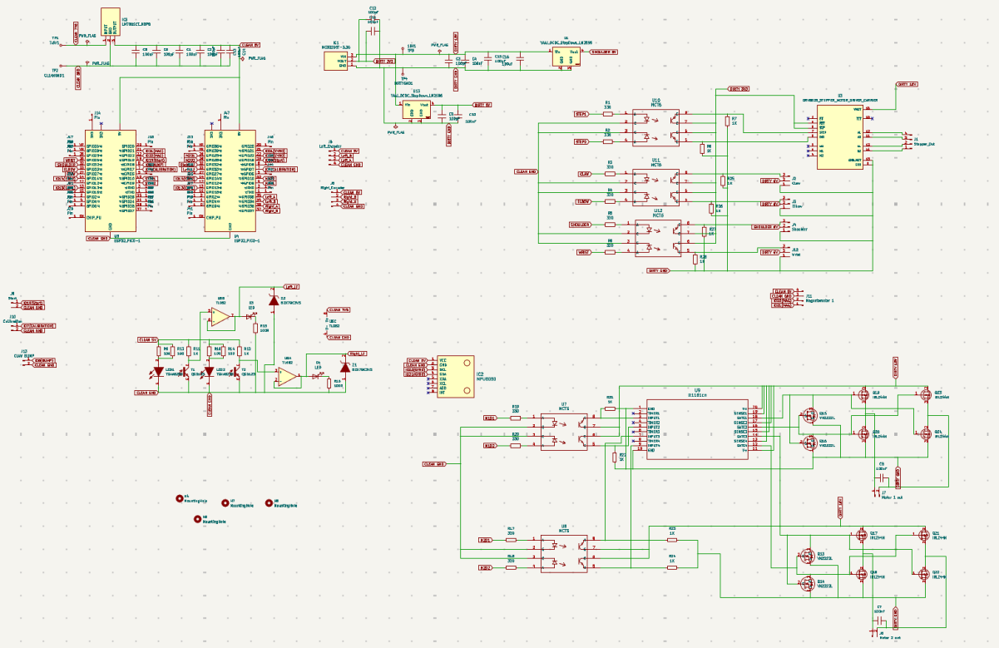
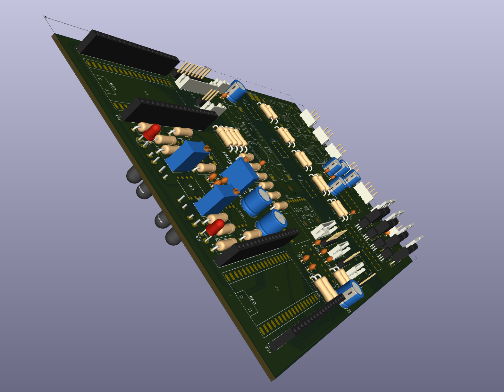
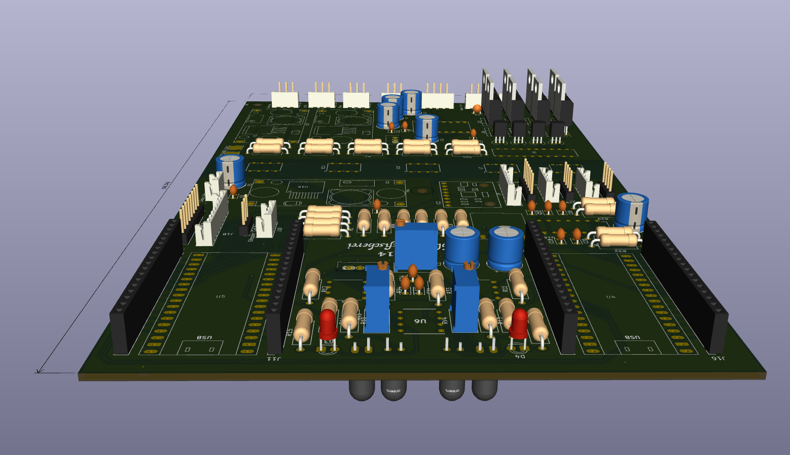
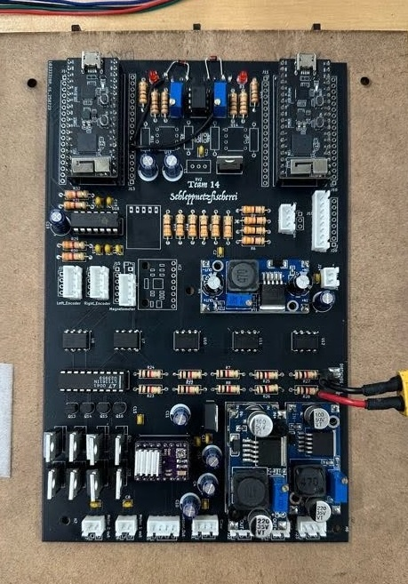
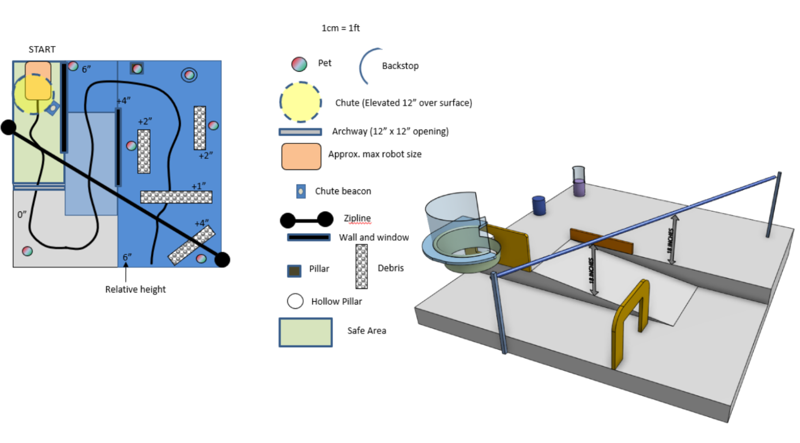

Summer 2025
Autonomous Rescue Robot
For ENPH 253's Robot Summer, the course was a burning pet shelter and our robot had two minutes to find stuffed-animal "pets" and carry them to safety. We designed and built a fully autonomous robot from scratch in six weeks.
Custom ESP32 PCBs, PID motor control and state-machine navigation
Read the full write-up
Mechanical
We started with quick shape prototypes cut on the laser cutter to get a feel for the robot's form, then used the same process for the final chassis and extended it to waterjet-cut parts.




Electrical
The electronics were a crash course in real-world debugging: parasitic capacitance, noise coupling through ground planes, and many hours with a scope and wavegen. I designed ESP32-based boards in KiCad with distributed power regulation and separated analog and digital signal paths.




Software
Firmware was object-oriented C++, with each component behind a clean interface so the navigation logic could treat hardware as a black box. We fused IMU, Hall-effect, IR and magnetometer data for homing and localization, and tuned PID gains wirelessly over WiFi.
